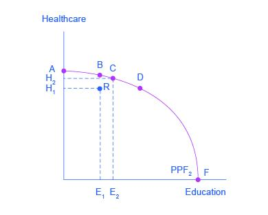

5 The Instruments of Trade Policy
5.1 Key concepts
| Term | Definition |
|---|---|
| Opportunity cost | The value of the next best alternative to any decision you make. For instance, the opportunity cost of watching movey is the hour of studying she gives up to do that |
| Growth | An increase in an economy’s ability to produce goods and services over time; economic growth in the PPF model is illustrated by a shift out of the PPF |
| Contraction | A decrease in output that occurs due to the under-utilization of resources. In a graphical model of the PPF, a contraction is represented by moving to a point that is further away from, and on the interior of the PPF |
| Constant opportunity costs | when the opportunity cost of a good remains constant as output of the good increases, which is represented as a PPF curve that is a straight line |
| Increasing opportunity costs | when the opportunity cost of a good increases as output of the good increases, which is represented in a graph as a PPF that is bowed out from the origin |
| Productivity | (also called technology) the ability to combine economic resources; an increase in productivity causes economic growth even if economic resources have not changed, which would be represented by a shift out of the PPF |
5.2 Production Possibility Frontier
Production possibilities frontier (PPF) shows the maximum attainable combinations of two products that may be produced if we use our resources efficiently. Sometimes economists call this Production Possibilities Curve (PPC).
PPFs can be used to demonstrate:
- opportunity costs (trade-offs).
- efficient production.
- economic growth
Understanding opportunity costs - The Shape of PPFs
Constant opportunity cost PPFs are
– Linear lines. Opportunity cost is constant (the same) no matter where you produce.
Increasing opportunity cost PPFs are
– Concave. As you keep increasing production, opportunity cost is increasing.
The PPF with increasing costs
It is more realistic for a nation to face increasing rather than constant opportunity costs. Increasing opportunity costs mean that the nation must give up more and more of one commodity to release just enough resources to produce each additional unit of another commodity. Increasing opportunity costs result in a production frontier that is concave from the origin (rather than a straight line).

5.4 The shape of the PPF and the law of diminishing returns
The law of diminishing returns, which holds that as additional increments of resources are added to a certain purpose, the marginal benefit from those additional increments will decline.
For instance, when government spends a certain amount more on reducing crime, for example, the original gains in reducing crime could be relatively large. But additional increases typically cause relatively smaller reductions in crime, and paying for enough police and security to reduce crime to nothing at all would be tremendously expensive.
The curvature of the production possibilities frontier shows that as additional resources are added to education, moving from left to right along the horizontal axis, the original gains are fairly large, but gradually diminish. Similarly, as additional resources are added to healthcare, moving from bottom to top on the vertical axis, the original gains are fairly large, but again gradually diminish. In this way, the law of diminishing returns produces the outward-bending shape of the production possibilities frontier.
5.5 Productive Efficiency and Allocative Efficiency
The production possibilities frontier can illustrate two kinds of efficiency: productive efficiency and allocative efficiency. The following graph illustrates these ideas using a production possibilities frontier between healthcare and education.
Productive efficiency means that, given the available inputs and technology, it is impossible to produce more of one good without decreasing the quantity that is produced of another good. All choices on the PPF in this graph, including A, B, C, D, and F, display productive efficiency. As a firm moves from any one of these choices to any other, either healthcare increases and education decreases or vice versa. However, any choice inside the production possibilities frontier is productively inefficient and wasteful because it is possible to produce more of one good, the other good, or some combination of both goods.
Allocative efficiency means that the particular mix of goods a society produces represents the combination that society most desires. How to determine what a society desires can be a controversial question, and is usually discussed in political science, sociology, and philosophy classes as well as in economics. At its most basic, allocative efficiency means producers supply the quantity of each product that consumers demand. Only one of the productively efficient choices will be the allocatively efficient choice for society as a whole.

5.5.1 Quiz 5
Why is a production possibilities frontier typically drawn as a curve, rather than a straight line?
5.6 Heckscher–Ohlin model of trade
We now go one step further and explain the reason, or cause, for the difference in relative commodity prices and comparative advantage between the two nations.
Questions were left largely unanswered by Ricardo. According to Ricardo, comparative advantage was based on the difference in the productivity of labor among nations, but he provided no explanation for such a difference in productivity, except for possible differences in climate.
Named after two Swedish economists, Eli Heckscher and Bertil Ohlin, the Heckscher–Ohlin model studies the pattern of production and trade that arises when countries have different endowments of factors of production, such as labor, capital and land.
The Heckscher–Ohlin model of trade states that endowment differences among countries play a key role in determining the pattern of trade.
Heckscher–Ohlin Theorem. A country has a comparative advantage in the good that is relatively intensive in the country’s relatively abundant factor.
5.7 The Krugman model of trade
The Krugman model or the model of trade based on internal economies of scale in production.
It shows how countries can gain from trade even in a world where countries have identical endowments and technologies, provided that production functions exhibit increasing returns to scale and consumers have a love for variety.
5.8 The gravity model
Let’s begin by describing who trades with whom. An empirical relationship known as the gravity model helps to make sense of the value of trade between any pair of countries and sheds light on the impediments that continue to limit international trade even in today’s global economy.
Three of the top 15 U.S. trading partners are European nations: Germany, the United Kingdom, and France. Why does the United States trade more heavily with these three European countries than with others? The answer is that these are the three largest European economies. That is, they have the highest values of gross domestic product (GDP), which measures the total value of all goods and services produced in an economy.
There is a strong empirical relationship between the size of a country’s economy and the volume of both its imports and its exports.
- The basic form of the gravity equation is as follows:
\[T_{ij} = \frac{GDP_{i}^{\alpha } GDP_{j}^{\beta}}{D_{ij}^{\theta}}\] Here,
\(T_{ij}\) indicates bilateral trade between country \(i\), and \(j\)
\(GDP_i\) indicates the economic size of \(i\), measured by gross domestic product
\(D_{ij}\) indicates the bilateral distance between the two countries
The parameters are \(α\), \(β\), and \(θ\)